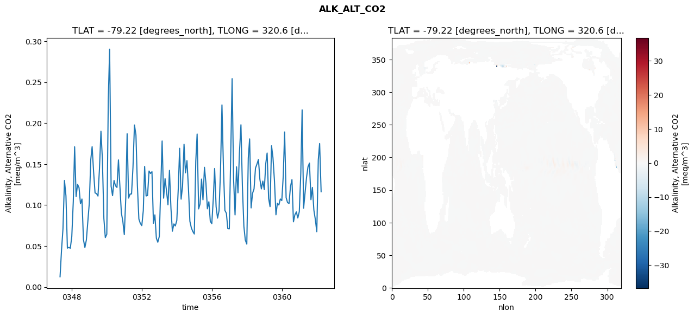
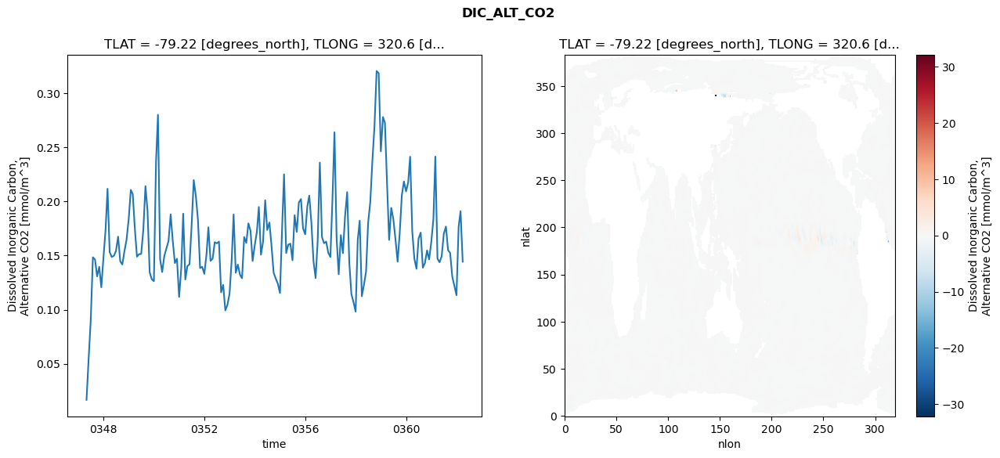
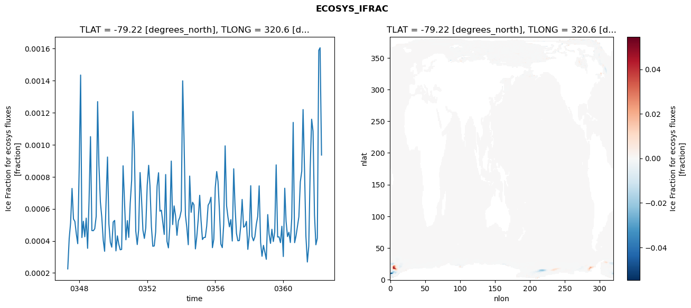
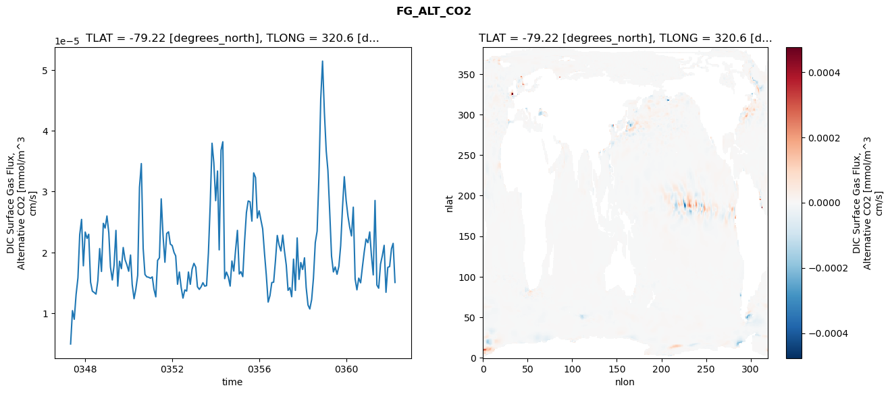

glb-dor_North_Atlantic_basin_012_1999-04-01_00049#
Simulation details#
Case: smyle.cdr-atlas-v0.glb-dor_North_Atlantic_basin_012_1999-04-01_00049.001
Basin: North_Atlantic_basin
Polygon: 12.0
Start date: 1999-04
Show code cell source Hide code cell source
import xarray as xr
import matplotlib.pyplot as plt
Show code cell source Hide code cell source
zarr_store = "/path/to/zarr/store"
# Parameters
zarr_store = "/global/cfs/projectdirs/m4746/Projects/Ocean-CDR-Atlas-v0/data/validation/smyle.cdr-atlas-v0.glb-dor_North_Atlantic_basin_012_1999-04-01_00049.001.validation.zarr"
Show code cell source Hide code cell source
%%time
ds_o = xr.open_zarr(zarr_store).compute()
ds_o
CPU times: user 686 ms, sys: 464 ms, total: 1.15 s
Wall time: 1.47 s
<xarray.Dataset> Size: 2MB
Dimensions: (nlat: 384, nlon: 320, time: 180)
Coordinates:
TLAT float64 8B -79.22
TLONG float64 8B 320.6
ULAT float64 8B -78.95
ULONG float64 8B 321.1
* time (time) object 1kB 0347-05-01 00:00:00 ... 0362-04-01 0...
z_t float32 4B 500.0
Dimensions without coordinates: nlat, nlon
Data variables:
ALK_ALT_CO2_diff (nlat, nlon) float32 492kB nan nan nan ... nan nan nan
ALK_ALT_CO2_rmse (time) float64 1kB 0.01251 0.04527 ... 0.1751 0.1163
DIC_ALT_CO2_diff (nlat, nlon) float32 492kB nan nan nan ... nan nan nan
DIC_ALT_CO2_rmse (time) float64 1kB 0.01671 0.05529 ... 0.191 0.1443
ECOSYS_IFRAC_diff (nlat, nlon) float32 492kB nan nan nan ... nan nan nan
ECOSYS_IFRAC_rmse (time) float64 1kB 0.0002252 0.0004143 ... 0.0009357
FG_ALT_CO2_diff (nlat, nlon) float32 492kB nan nan nan ... nan nan nan
FG_ALT_CO2_rmse (time) float64 1kB 4.965e-06 1.044e-05 ... 1.507e-05xarray.Dataset
- nlat: 384
- nlon: 320
- time: 180
- TLAT()float64-79.22
- long_name :
- array of t-grid latitudes
- units :
- degrees_north
array(-79.22052261)
- TLONG()float64320.6
- long_name :
- array of t-grid longitudes
- units :
- degrees_east
array(320.56250892)
- ULAT()float64-78.95
- long_name :
- array of u-grid latitudes
- units :
- degrees_north
array(-78.95289509)
- ULONG()float64321.1
- long_name :
- array of u-grid longitudes
- units :
- degrees_east
array(321.12500894)
- time(time)object0347-05-01 00:00:00 ... 0362-04-...
- bounds :
- time_bound
- long_name :
- time
array([cftime.DatetimeNoLeap(347, 5, 1, 0, 0, 0, 0, has_year_zero=True), cftime.DatetimeNoLeap(347, 6, 1, 0, 0, 0, 0, has_year_zero=True), cftime.DatetimeNoLeap(347, 7, 1, 0, 0, 0, 0, has_year_zero=True), cftime.DatetimeNoLeap(347, 8, 1, 0, 0, 0, 0, has_year_zero=True), cftime.DatetimeNoLeap(347, 9, 1, 0, 0, 0, 0, has_year_zero=True), cftime.DatetimeNoLeap(347, 10, 1, 0, 0, 0, 0, has_year_zero=True), cftime.DatetimeNoLeap(347, 11, 1, 0, 0, 0, 0, has_year_zero=True), cftime.DatetimeNoLeap(347, 12, 1, 0, 0, 0, 0, has_year_zero=True), cftime.DatetimeNoLeap(348, 1, 1, 0, 0, 0, 0, has_year_zero=True), cftime.DatetimeNoLeap(348, 2, 1, 0, 0, 0, 0, has_year_zero=True), cftime.DatetimeNoLeap(348, 3, 1, 0, 0, 0, 0, has_year_zero=True), cftime.DatetimeNoLeap(348, 4, 1, 0, 0, 0, 0, has_year_zero=True), cftime.DatetimeNoLeap(348, 5, 1, 0, 0, 0, 0, has_year_zero=True), cftime.DatetimeNoLeap(348, 6, 1, 0, 0, 0, 0, has_year_zero=True), cftime.DatetimeNoLeap(348, 7, 1, 0, 0, 0, 0, has_year_zero=True), cftime.DatetimeNoLeap(348, 8, 1, 0, 0, 0, 0, has_year_zero=True), cftime.DatetimeNoLeap(348, 9, 1, 0, 0, 0, 0, has_year_zero=True), cftime.DatetimeNoLeap(348, 10, 1, 0, 0, 0, 0, has_year_zero=True), cftime.DatetimeNoLeap(348, 11, 1, 0, 0, 0, 0, has_year_zero=True), cftime.DatetimeNoLeap(348, 12, 1, 0, 0, 0, 0, has_year_zero=True), cftime.DatetimeNoLeap(349, 1, 1, 0, 0, 0, 0, has_year_zero=True), cftime.DatetimeNoLeap(349, 2, 1, 0, 0, 0, 0, has_year_zero=True), cftime.DatetimeNoLeap(349, 3, 1, 0, 0, 0, 0, has_year_zero=True), cftime.DatetimeNoLeap(349, 4, 1, 0, 0, 0, 0, has_year_zero=True), cftime.DatetimeNoLeap(349, 5, 1, 0, 0, 0, 0, has_year_zero=True), cftime.DatetimeNoLeap(349, 6, 1, 0, 0, 0, 0, has_year_zero=True), cftime.DatetimeNoLeap(349, 7, 1, 0, 0, 0, 0, has_year_zero=True), cftime.DatetimeNoLeap(349, 8, 1, 0, 0, 0, 0, has_year_zero=True), cftime.DatetimeNoLeap(349, 9, 1, 0, 0, 0, 0, has_year_zero=True), cftime.DatetimeNoLeap(349, 10, 1, 0, 0, 0, 0, has_year_zero=True), cftime.DatetimeNoLeap(349, 11, 1, 0, 0, 0, 0, has_year_zero=True), cftime.DatetimeNoLeap(349, 12, 1, 0, 0, 0, 0, has_year_zero=True), cftime.DatetimeNoLeap(350, 1, 1, 0, 0, 0, 0, has_year_zero=True), cftime.DatetimeNoLeap(350, 2, 1, 0, 0, 0, 0, has_year_zero=True), cftime.DatetimeNoLeap(350, 3, 1, 0, 0, 0, 0, has_year_zero=True), cftime.DatetimeNoLeap(350, 4, 1, 0, 0, 0, 0, has_year_zero=True), cftime.DatetimeNoLeap(350, 5, 1, 0, 0, 0, 0, has_year_zero=True), cftime.DatetimeNoLeap(350, 6, 1, 0, 0, 0, 0, has_year_zero=True), cftime.DatetimeNoLeap(350, 7, 1, 0, 0, 0, 0, has_year_zero=True), cftime.DatetimeNoLeap(350, 8, 1, 0, 0, 0, 0, has_year_zero=True), cftime.DatetimeNoLeap(350, 9, 1, 0, 0, 0, 0, has_year_zero=True), cftime.DatetimeNoLeap(350, 10, 1, 0, 0, 0, 0, has_year_zero=True), cftime.DatetimeNoLeap(350, 11, 1, 0, 0, 0, 0, has_year_zero=True), cftime.DatetimeNoLeap(350, 12, 1, 0, 0, 0, 0, has_year_zero=True), cftime.DatetimeNoLeap(351, 1, 1, 0, 0, 0, 0, has_year_zero=True), cftime.DatetimeNoLeap(351, 2, 1, 0, 0, 0, 0, has_year_zero=True), cftime.DatetimeNoLeap(351, 3, 1, 0, 0, 0, 0, has_year_zero=True), cftime.DatetimeNoLeap(351, 4, 1, 0, 0, 0, 0, has_year_zero=True), cftime.DatetimeNoLeap(351, 5, 1, 0, 0, 0, 0, has_year_zero=True), cftime.DatetimeNoLeap(351, 6, 1, 0, 0, 0, 0, has_year_zero=True), cftime.DatetimeNoLeap(351, 7, 1, 0, 0, 0, 0, has_year_zero=True), cftime.DatetimeNoLeap(351, 8, 1, 0, 0, 0, 0, has_year_zero=True), cftime.DatetimeNoLeap(351, 9, 1, 0, 0, 0, 0, has_year_zero=True), cftime.DatetimeNoLeap(351, 10, 1, 0, 0, 0, 0, has_year_zero=True), cftime.DatetimeNoLeap(351, 11, 1, 0, 0, 0, 0, has_year_zero=True), cftime.DatetimeNoLeap(351, 12, 1, 0, 0, 0, 0, has_year_zero=True), cftime.DatetimeNoLeap(352, 1, 1, 0, 0, 0, 0, has_year_zero=True), cftime.DatetimeNoLeap(352, 2, 1, 0, 0, 0, 0, has_year_zero=True), cftime.DatetimeNoLeap(352, 3, 1, 0, 0, 0, 0, has_year_zero=True), cftime.DatetimeNoLeap(352, 4, 1, 0, 0, 0, 0, has_year_zero=True), cftime.DatetimeNoLeap(352, 5, 1, 0, 0, 0, 0, has_year_zero=True), cftime.DatetimeNoLeap(352, 6, 1, 0, 0, 0, 0, has_year_zero=True), cftime.DatetimeNoLeap(352, 7, 1, 0, 0, 0, 0, has_year_zero=True), cftime.DatetimeNoLeap(352, 8, 1, 0, 0, 0, 0, has_year_zero=True), cftime.DatetimeNoLeap(352, 9, 1, 0, 0, 0, 0, has_year_zero=True), cftime.DatetimeNoLeap(352, 10, 1, 0, 0, 0, 0, has_year_zero=True), cftime.DatetimeNoLeap(352, 11, 1, 0, 0, 0, 0, has_year_zero=True), cftime.DatetimeNoLeap(352, 12, 1, 0, 0, 0, 0, has_year_zero=True), cftime.DatetimeNoLeap(353, 1, 1, 0, 0, 0, 0, has_year_zero=True), cftime.DatetimeNoLeap(353, 2, 1, 0, 0, 0, 0, has_year_zero=True), cftime.DatetimeNoLeap(353, 3, 1, 0, 0, 0, 0, has_year_zero=True), cftime.DatetimeNoLeap(353, 4, 1, 0, 0, 0, 0, has_year_zero=True), cftime.DatetimeNoLeap(353, 5, 1, 0, 0, 0, 0, has_year_zero=True), cftime.DatetimeNoLeap(353, 6, 1, 0, 0, 0, 0, has_year_zero=True), cftime.DatetimeNoLeap(353, 7, 1, 0, 0, 0, 0, has_year_zero=True), cftime.DatetimeNoLeap(353, 8, 1, 0, 0, 0, 0, has_year_zero=True), cftime.DatetimeNoLeap(353, 9, 1, 0, 0, 0, 0, has_year_zero=True), cftime.DatetimeNoLeap(353, 10, 1, 0, 0, 0, 0, has_year_zero=True), cftime.DatetimeNoLeap(353, 11, 1, 0, 0, 0, 0, has_year_zero=True), cftime.DatetimeNoLeap(353, 12, 1, 0, 0, 0, 0, has_year_zero=True), cftime.DatetimeNoLeap(354, 1, 1, 0, 0, 0, 0, has_year_zero=True), cftime.DatetimeNoLeap(354, 2, 1, 0, 0, 0, 0, has_year_zero=True), cftime.DatetimeNoLeap(354, 3, 1, 0, 0, 0, 0, has_year_zero=True), cftime.DatetimeNoLeap(354, 4, 1, 0, 0, 0, 0, has_year_zero=True), cftime.DatetimeNoLeap(354, 5, 1, 0, 0, 0, 0, has_year_zero=True), cftime.DatetimeNoLeap(354, 6, 1, 0, 0, 0, 0, has_year_zero=True), cftime.DatetimeNoLeap(354, 7, 1, 0, 0, 0, 0, has_year_zero=True), cftime.DatetimeNoLeap(354, 8, 1, 0, 0, 0, 0, has_year_zero=True), cftime.DatetimeNoLeap(354, 9, 1, 0, 0, 0, 0, has_year_zero=True), cftime.DatetimeNoLeap(354, 10, 1, 0, 0, 0, 0, has_year_zero=True), cftime.DatetimeNoLeap(354, 11, 1, 0, 0, 0, 0, has_year_zero=True), cftime.DatetimeNoLeap(354, 12, 1, 0, 0, 0, 0, has_year_zero=True), cftime.DatetimeNoLeap(355, 1, 1, 0, 0, 0, 0, has_year_zero=True), cftime.DatetimeNoLeap(355, 2, 1, 0, 0, 0, 0, has_year_zero=True), cftime.DatetimeNoLeap(355, 3, 1, 0, 0, 0, 0, has_year_zero=True), cftime.DatetimeNoLeap(355, 4, 1, 0, 0, 0, 0, has_year_zero=True), cftime.DatetimeNoLeap(355, 5, 1, 0, 0, 0, 0, has_year_zero=True), cftime.DatetimeNoLeap(355, 6, 1, 0, 0, 0, 0, has_year_zero=True), cftime.DatetimeNoLeap(355, 7, 1, 0, 0, 0, 0, has_year_zero=True), cftime.DatetimeNoLeap(355, 8, 1, 0, 0, 0, 0, has_year_zero=True), cftime.DatetimeNoLeap(355, 9, 1, 0, 0, 0, 0, has_year_zero=True), cftime.DatetimeNoLeap(355, 10, 1, 0, 0, 0, 0, has_year_zero=True), cftime.DatetimeNoLeap(355, 11, 1, 0, 0, 0, 0, has_year_zero=True), cftime.DatetimeNoLeap(355, 12, 1, 0, 0, 0, 0, has_year_zero=True), cftime.DatetimeNoLeap(356, 1, 1, 0, 0, 0, 0, has_year_zero=True), cftime.DatetimeNoLeap(356, 2, 1, 0, 0, 0, 0, has_year_zero=True), cftime.DatetimeNoLeap(356, 3, 1, 0, 0, 0, 0, has_year_zero=True), cftime.DatetimeNoLeap(356, 4, 1, 0, 0, 0, 0, has_year_zero=True), cftime.DatetimeNoLeap(356, 5, 1, 0, 0, 0, 0, has_year_zero=True), cftime.DatetimeNoLeap(356, 6, 1, 0, 0, 0, 0, has_year_zero=True), cftime.DatetimeNoLeap(356, 7, 1, 0, 0, 0, 0, has_year_zero=True), cftime.DatetimeNoLeap(356, 8, 1, 0, 0, 0, 0, has_year_zero=True), cftime.DatetimeNoLeap(356, 9, 1, 0, 0, 0, 0, has_year_zero=True), cftime.DatetimeNoLeap(356, 10, 1, 0, 0, 0, 0, has_year_zero=True), cftime.DatetimeNoLeap(356, 11, 1, 0, 0, 0, 0, has_year_zero=True), cftime.DatetimeNoLeap(356, 12, 1, 0, 0, 0, 0, has_year_zero=True), cftime.DatetimeNoLeap(357, 1, 1, 0, 0, 0, 0, has_year_zero=True), cftime.DatetimeNoLeap(357, 2, 1, 0, 0, 0, 0, has_year_zero=True), cftime.DatetimeNoLeap(357, 3, 1, 0, 0, 0, 0, has_year_zero=True), cftime.DatetimeNoLeap(357, 4, 1, 0, 0, 0, 0, has_year_zero=True), cftime.DatetimeNoLeap(357, 5, 1, 0, 0, 0, 0, has_year_zero=True), cftime.DatetimeNoLeap(357, 6, 1, 0, 0, 0, 0, has_year_zero=True), cftime.DatetimeNoLeap(357, 7, 1, 0, 0, 0, 0, has_year_zero=True), cftime.DatetimeNoLeap(357, 8, 1, 0, 0, 0, 0, has_year_zero=True), cftime.DatetimeNoLeap(357, 9, 1, 0, 0, 0, 0, has_year_zero=True), cftime.DatetimeNoLeap(357, 10, 1, 0, 0, 0, 0, has_year_zero=True), cftime.DatetimeNoLeap(357, 11, 1, 0, 0, 0, 0, has_year_zero=True), cftime.DatetimeNoLeap(357, 12, 1, 0, 0, 0, 0, has_year_zero=True), cftime.DatetimeNoLeap(358, 1, 1, 0, 0, 0, 0, has_year_zero=True), cftime.DatetimeNoLeap(358, 2, 1, 0, 0, 0, 0, has_year_zero=True), cftime.DatetimeNoLeap(358, 3, 1, 0, 0, 0, 0, has_year_zero=True), cftime.DatetimeNoLeap(358, 4, 1, 0, 0, 0, 0, has_year_zero=True), cftime.DatetimeNoLeap(358, 5, 1, 0, 0, 0, 0, has_year_zero=True), cftime.DatetimeNoLeap(358, 6, 1, 0, 0, 0, 0, has_year_zero=True), cftime.DatetimeNoLeap(358, 7, 1, 0, 0, 0, 0, has_year_zero=True), cftime.DatetimeNoLeap(358, 8, 1, 0, 0, 0, 0, has_year_zero=True), cftime.DatetimeNoLeap(358, 9, 1, 0, 0, 0, 0, has_year_zero=True), cftime.DatetimeNoLeap(358, 10, 1, 0, 0, 0, 0, has_year_zero=True), cftime.DatetimeNoLeap(358, 11, 1, 0, 0, 0, 0, has_year_zero=True), cftime.DatetimeNoLeap(358, 12, 1, 0, 0, 0, 0, has_year_zero=True), cftime.DatetimeNoLeap(359, 1, 1, 0, 0, 0, 0, has_year_zero=True), cftime.DatetimeNoLeap(359, 2, 1, 0, 0, 0, 0, has_year_zero=True), cftime.DatetimeNoLeap(359, 3, 1, 0, 0, 0, 0, has_year_zero=True), cftime.DatetimeNoLeap(359, 4, 1, 0, 0, 0, 0, has_year_zero=True), cftime.DatetimeNoLeap(359, 5, 1, 0, 0, 0, 0, has_year_zero=True), cftime.DatetimeNoLeap(359, 6, 1, 0, 0, 0, 0, has_year_zero=True), cftime.DatetimeNoLeap(359, 7, 1, 0, 0, 0, 0, has_year_zero=True), cftime.DatetimeNoLeap(359, 8, 1, 0, 0, 0, 0, has_year_zero=True), cftime.DatetimeNoLeap(359, 9, 1, 0, 0, 0, 0, has_year_zero=True), cftime.DatetimeNoLeap(359, 10, 1, 0, 0, 0, 0, has_year_zero=True), cftime.DatetimeNoLeap(359, 11, 1, 0, 0, 0, 0, has_year_zero=True), cftime.DatetimeNoLeap(359, 12, 1, 0, 0, 0, 0, has_year_zero=True), cftime.DatetimeNoLeap(360, 1, 1, 0, 0, 0, 0, has_year_zero=True), cftime.DatetimeNoLeap(360, 2, 1, 0, 0, 0, 0, has_year_zero=True), cftime.DatetimeNoLeap(360, 3, 1, 0, 0, 0, 0, has_year_zero=True), cftime.DatetimeNoLeap(360, 4, 1, 0, 0, 0, 0, has_year_zero=True), cftime.DatetimeNoLeap(360, 5, 1, 0, 0, 0, 0, has_year_zero=True), cftime.DatetimeNoLeap(360, 6, 1, 0, 0, 0, 0, has_year_zero=True), cftime.DatetimeNoLeap(360, 7, 1, 0, 0, 0, 0, has_year_zero=True), cftime.DatetimeNoLeap(360, 8, 1, 0, 0, 0, 0, has_year_zero=True), cftime.DatetimeNoLeap(360, 9, 1, 0, 0, 0, 0, has_year_zero=True), cftime.DatetimeNoLeap(360, 10, 1, 0, 0, 0, 0, has_year_zero=True), cftime.DatetimeNoLeap(360, 11, 1, 0, 0, 0, 0, has_year_zero=True), cftime.DatetimeNoLeap(360, 12, 1, 0, 0, 0, 0, has_year_zero=True), cftime.DatetimeNoLeap(361, 1, 1, 0, 0, 0, 0, has_year_zero=True), cftime.DatetimeNoLeap(361, 2, 1, 0, 0, 0, 0, has_year_zero=True), cftime.DatetimeNoLeap(361, 3, 1, 0, 0, 0, 0, has_year_zero=True), cftime.DatetimeNoLeap(361, 4, 1, 0, 0, 0, 0, has_year_zero=True), cftime.DatetimeNoLeap(361, 5, 1, 0, 0, 0, 0, has_year_zero=True), cftime.DatetimeNoLeap(361, 6, 1, 0, 0, 0, 0, has_year_zero=True), cftime.DatetimeNoLeap(361, 7, 1, 0, 0, 0, 0, has_year_zero=True), cftime.DatetimeNoLeap(361, 8, 1, 0, 0, 0, 0, has_year_zero=True), cftime.DatetimeNoLeap(361, 9, 1, 0, 0, 0, 0, has_year_zero=True), cftime.DatetimeNoLeap(361, 10, 1, 0, 0, 0, 0, has_year_zero=True), cftime.DatetimeNoLeap(361, 11, 1, 0, 0, 0, 0, has_year_zero=True), cftime.DatetimeNoLeap(361, 12, 1, 0, 0, 0, 0, has_year_zero=True), cftime.DatetimeNoLeap(362, 1, 1, 0, 0, 0, 0, has_year_zero=True), cftime.DatetimeNoLeap(362, 2, 1, 0, 0, 0, 0, has_year_zero=True), cftime.DatetimeNoLeap(362, 3, 1, 0, 0, 0, 0, has_year_zero=True), cftime.DatetimeNoLeap(362, 4, 1, 0, 0, 0, 0, has_year_zero=True)], dtype=object) - z_t()float32500.0
- long_name :
- depth from surface to midpoint of layer
- positive :
- down
- units :
- centimeters
- valid_max :
- 537500.0
- valid_min :
- 500.0
array(500., dtype=float32)
- ALK_ALT_CO2_diff(nlat, nlon)float32nan nan nan nan ... nan nan nan nan
- cell_methods :
- time: mean
- grid_loc :
- 3111
- long_name :
- Alkalinity, Alternative CO2
- units :
- meq/m^3
array([[ nan, nan, nan, ..., nan, nan, nan], [ nan, nan, nan, ..., nan, nan, nan], [-0.0534668 , -0.05102539, -0.04223633, ..., nan, nan, nan], ..., [ nan, nan, nan, ..., nan, nan, nan], [ nan, nan, nan, ..., nan, nan, nan], [ nan, nan, nan, ..., nan, nan, nan]], dtype=float32) - ALK_ALT_CO2_rmse(time)float640.01251 0.04527 ... 0.1751 0.1163
- cell_methods :
- time: mean
- grid_loc :
- 3111
- long_name :
- Alkalinity, Alternative CO2
- units :
- meq/m^3
array([0.01251428, 0.04527462, 0.07109933, 0.13005034, 0.11131845, 0.04743867, 0.04837774, 0.04729579, 0.06167754, 0.10432074, 0.17110688, 0.11039838, 0.12528775, 0.12121886, 0.10170528, 0.1073971 , 0.05783755, 0.04823516, 0.05749264, 0.07981736, 0.10238198, 0.15557933, 0.17120826, 0.14028027, 0.11485305, 0.1139875 , 0.11095954, 0.14407738, 0.19010818, 0.15616282, 0.08372248, 0.06034309, 0.06441455, 0.22844853, 0.29027176, 0.12299151, 0.11148465, 0.13004871, 0.12351759, 0.12149433, 0.15511706, 0.1232567 , 0.09032568, 0.0805124 , 0.06389282, 0.10894949, 0.18703121, 0.10853258, 0.1133998 , 0.11359486, 0.14606188, 0.19772113, 0.18559276, 0.12372524, 0.08298145, 0.07766852, 0.07487772, 0.09308974, 0.14712934, 0.11108471, 0.11166594, 0.14157764, 0.13854489, 0.14072482, 0.0777761 , 0.0880289 , 0.05945671, 0.05468128, 0.06173627, 0.12225892, 0.17821317, 0.10841265, 0.13222519, 0.11687846, 0.10032309, 0.14234412, 0.09606489, 0.06806284, 0.07698548, 0.07457201, 0.08109502, 0.12037288, 0.16930685, 0.10719895, 0.12292204, 0.17416655, 0.1393401 , 0.15420857, 0.12020292, 0.08020064, 0.07204276, 0.06774186, 0.06467568, 0.15356506, 0.18671666, 0.09532211, 0.10138001, 0.13173501, 0.10640677, 0.14611444, 0.12626212, 0.0954222 , 0.10406299, 0.08011413, 0.07729499, 0.10748094, 0.14467429, 0.09796663, 0.08405496, 0.09305747, 0.14063106, 0.22223408, 0.14475879, 0.09345622, 0.09008343, 0.07119851, 0.07091246, 0.16479935, 0.25427135, 0.13090276, 0.08796604, 0.14664999, 0.11493084, 0.16457943, 0.19800251, 0.12314881, 0.07406185, 0.05727053, 0.05231185, 0.15744011, 0.18076248, 0.09651688, 0.11433607, 0.1196906 , 0.14509664, 0.14999272, 0.15560359, 0.13136547, 0.11971127, 0.12925176, 0.11891124, 0.15086512, 0.16352056, 0.10815437, 0.09807665, 0.1723504 , 0.15772377, 0.12948318, 0.08812687, 0.10221551, 0.10012496, 0.10742118, 0.10550489, 0.13619817, 0.18919403, 0.10914193, 0.10300691, 0.10197755, 0.12262315, 0.13104722, 0.07954898, 0.08814809, 0.09168285, 0.0841786 , 0.09204284, 0.13825648, 0.21618103, 0.09624609, 0.11433962, 0.13379229, 0.14664974, 0.15124613, 0.10652688, 0.12153717, 0.09383077, 0.0825805 , 0.06747939, 0.15518034, 0.17513683, 0.11630429]) - DIC_ALT_CO2_diff(nlat, nlon)float32nan nan nan nan ... nan nan nan nan
- cell_methods :
- time: mean
- grid_loc :
- 3111
- long_name :
- Dissolved Inorganic Carbon, Alternative CO2
- units :
- mmol/m^3
array([[ nan, nan, nan, ..., nan, nan, nan], [ nan, nan, nan, ..., nan, nan, nan], [-0.17578125, -0.14672852, -0.12597656, ..., nan, nan, nan], ..., [ nan, nan, nan, ..., nan, nan, nan], [ nan, nan, nan, ..., nan, nan, nan], [ nan, nan, nan, ..., nan, nan, nan]], dtype=float32) - DIC_ALT_CO2_rmse(time)float640.01671 0.05529 ... 0.191 0.1443
- cell_methods :
- time: mean
- grid_loc :
- 3111
- long_name :
- Dissolved Inorganic Carbon, Alternative CO2
- units :
- mmol/m^3
array([0.01671368, 0.05528827, 0.09032611, 0.14843579, 0.1463577 , 0.13075285, 0.13962508, 0.1206728 , 0.14804852, 0.17423053, 0.21175226, 0.15317948, 0.14875862, 0.1498118 , 0.15416809, 0.16749093, 0.14477571, 0.14177773, 0.15419779, 0.16452127, 0.18353039, 0.2107139 , 0.20684818, 0.17435203, 0.14900357, 0.15134798, 0.15146085, 0.1737417 , 0.21418302, 0.19119287, 0.13459251, 0.12822667, 0.12634702, 0.23671476, 0.28006524, 0.14669536, 0.13480942, 0.14980986, 0.15647574, 0.16354222, 0.18816073, 0.16375903, 0.14307704, 0.14707488, 0.11175899, 0.13799792, 0.1887322 , 0.12793455, 0.14025062, 0.14206435, 0.17774805, 0.21975102, 0.204869 , 0.18285671, 0.13849302, 0.13962274, 0.13311735, 0.15074852, 0.17609547, 0.14516374, 0.14713955, 0.16236204, 0.1613031 , 0.16298108, 0.11610767, 0.12294795, 0.09932286, 0.10439512, 0.11469795, 0.14573642, 0.18803651, 0.13420428, 0.14169147, 0.1323728 , 0.12907783, 0.16714076, 0.16177442, 0.17980028, 0.17284898, 0.145017 , 0.15957981, 0.17214282, 0.19492724, 0.15081086, 0.16261581, 0.20110714, 0.17365631, 0.18059603, 0.15881703, 0.13428397, 0.12877216, 0.12402118, 0.11542759, 0.1756475 , 0.22507303, 0.15243055, 0.16014809, 0.16098446, 0.14570994, 0.18733945, 0.17189566, 0.1989383 , 0.20226622, 0.17525289, 0.16964744, 0.19550281, 0.20544323, 0.1802378 , 0.14491983, 0.12923901, 0.16361586, 0.23591142, 0.16711525, 0.16139253, 0.16293862, 0.15267563, 0.14867968, 0.20448916, 0.26397678, 0.16615845, 0.13275428, 0.16891029, 0.1522028 , 0.18638144, 0.20866655, 0.14388591, 0.11440746, 0.10712001, 0.09819588, 0.16465979, 0.18222676, 0.11247375, 0.12285411, 0.13504773, 0.18017801, 0.19934746, 0.2379019 , 0.26954057, 0.32052717, 0.31852094, 0.246312 , 0.27797574, 0.27276311, 0.21628287, 0.16450862, 0.19405656, 0.18383789, 0.16498212, 0.14438515, 0.17049088, 0.20573609, 0.21846362, 0.20930192, 0.21766674, 0.24133583, 0.1723886 , 0.14724269, 0.13782854, 0.16571208, 0.1712426 , 0.13882247, 0.14305561, 0.15473544, 0.14649711, 0.16235449, 0.18393386, 0.24147571, 0.14714331, 0.14384761, 0.14941386, 0.16996601, 0.17683901, 0.15507013, 0.15248402, 0.13061007, 0.12218678, 0.11339595, 0.17655144, 0.1910206 , 0.14434945]) - ECOSYS_IFRAC_diff(nlat, nlon)float32nan nan nan nan ... nan nan nan nan
- cell_methods :
- time: mean
- grid_loc :
- 2110
- long_name :
- Ice Fraction for ecosys fluxes
- units :
- fraction
array([[ nan, nan, nan, ..., nan, nan, nan], [ nan, nan, nan, ..., nan, nan, nan], [ 0.00045282, -0.00099546, -0.00139594, ..., nan, nan, nan], ..., [ nan, nan, nan, ..., nan, nan, nan], [ nan, nan, nan, ..., nan, nan, nan], [ nan, nan, nan, ..., nan, nan, nan]], dtype=float32) - ECOSYS_IFRAC_rmse(time)float640.0002252 0.0004143 ... 0.0009357
- cell_methods :
- time: mean
- grid_loc :
- 2110
- long_name :
- Ice Fraction for ecosys fluxes
- units :
- fraction
array([0.00022516, 0.00041435, 0.00051232, 0.00072737, 0.00053668, 0.00052127, 0.00044271, 0.00038257, 0.00084544, 0.00143514, 0.00042087, 0.00052232, 0.00042579, 0.0005419 , 0.00035355, 0.00064904, 0.00105062, 0.00046433, 0.00046362, 0.00047571, 0.00055294, 0.00126928, 0.00087221, 0.00064315, 0.00054868, 0.00040505, 0.00033511, 0.00064266, 0.00092339, 0.00050584, 0.0003911 , 0.0003609 , 0.0005178 , 0.00052772, 0.00033769, 0.00043113, 0.00037911, 0.00034453, 0.00034688, 0.00086864, 0.00064538, 0.00040709, 0.00052663, 0.00042182, 0.00063382, 0.00077867, 0.00120803, 0.00095835, 0.00046058, 0.00037712, 0.00046856, 0.00082658, 0.00066316, 0.00046749, 0.00041557, 0.0004813 , 0.00074719, 0.00087168, 0.00074382, 0.00048922, 0.00036634, 0.00036835, 0.00045573, 0.00074211, 0.0008253 , 0.00058555, 0.00059113, 0.00051752, 0.00044021, 0.00081424, 0.00039748, 0.00035644, 0.00049249, 0.00089807, 0.00050179, 0.00061813, 0.00055689, 0.00043472, 0.00052456, 0.00054646, 0.00058854, 0.00139907, 0.00104734, 0.0005601 , 0.00048322, 0.00037608, 0.00080457, 0.00057823, 0.00064108, 0.00062471, 0.0003501 , 0.00042732, 0.00053635, 0.00068443, 0.00053122, 0.00040846, 0.00042126, 0.00042202, 0.00049112, 0.00062279, 0.00063876, 0.00067218, 0.00035783, 0.00041078, 0.00073132, 0.00083286, 0.00077068, 0.00058674, 0.00037989, 0.00035791, 0.00050195, 0.00099311, 0.00061926, 0.0005467 , 0.00048773, 0.00053262, 0.00039922, 0.00085008, 0.00061903, 0.00044656, 0.00040083, 0.00040207, 0.00049232, 0.00065864, 0.00048548, 0.00049207, 0.00052186, 0.00034708, 0.00043609, 0.00074439, 0.00042807, 0.00040053, 0.00042593, 0.00050376, 0.00055268, 0.00074349, 0.00038996, 0.00030408, 0.00037184, 0.00033009, 0.00028507, 0.00056419, 0.00044274, 0.00038449, 0.00047236, 0.00039607, 0.00045549, 0.00087434, 0.00042424, 0.00042526, 0.00038939, 0.00049127, 0.00030232, 0.00072866, 0.00052418, 0.00042679, 0.00045379, 0.00038996, 0.00054123, 0.00113943, 0.00038894, 0.00043103, 0.00049261, 0.0005508 , 0.00076878, 0.0008349 , 0.00121973, 0.0008451 , 0.00042919, 0.00026823, 0.00036605, 0.00084983, 0.00115928, 0.0010841 , 0.00056266, 0.00037583, 0.00041747, 0.00158914, 0.0016054 , 0.0009357 ]) - FG_ALT_CO2_diff(nlat, nlon)float32nan nan nan nan ... nan nan nan nan
- cell_methods :
- time: mean
- grid_loc :
- 2110
- long_name :
- DIC Surface Gas Flux, Alternative CO2
- units :
- mmol/m^3 cm/s
array([[ nan, nan, nan, ..., nan, nan, nan], [ nan, nan, nan, ..., nan, nan, nan], [2.4173060e-06, 5.3173571e-06, 7.9932215e-06, ..., nan, nan, nan], ..., [ nan, nan, nan, ..., nan, nan, nan], [ nan, nan, nan, ..., nan, nan, nan], [ nan, nan, nan, ..., nan, nan, nan]], dtype=float32) - FG_ALT_CO2_rmse(time)float644.965e-06 1.044e-05 ... 1.507e-05
- cell_methods :
- time: mean
- grid_loc :
- 2110
- long_name :
- DIC Surface Gas Flux, Alternative CO2
- units :
- mmol/m^3 cm/s
array([4.96522383e-06, 1.04431528e-05, 9.02435985e-06, 1.30936315e-05, 1.58349146e-05, 2.29446880e-05, 2.54340462e-05, 1.78095690e-05, 2.33557693e-05, 2.23143259e-05, 2.29936878e-05, 1.51291182e-05, 1.36451798e-05, 1.34227974e-05, 1.31595283e-05, 1.53769001e-05, 2.06378940e-05, 1.68807885e-05, 2.47859230e-05, 2.40109226e-05, 2.59938729e-05, 2.32384292e-05, 1.76073432e-05, 1.54788124e-05, 1.79538136e-05, 2.36252967e-05, 1.44685398e-05, 1.85669846e-05, 1.73459992e-05, 2.08131010e-05, 1.88157215e-05, 1.79883451e-05, 1.69152890e-05, 1.95787703e-05, 1.47208794e-05, 1.24073572e-05, 1.39811666e-05, 1.62519213e-05, 3.06823666e-05, 3.46065160e-05, 2.06594219e-05, 1.63830605e-05, 1.59925554e-05, 1.59310976e-05, 1.57718625e-05, 1.59843296e-05, 1.39594076e-05, 1.27132029e-05, 1.87003840e-05, 1.91209856e-05, 2.88087056e-05, 2.27323175e-05, 1.83950796e-05, 2.31204841e-05, 2.33899847e-05, 2.13720457e-05, 2.11350340e-05, 2.00056112e-05, 1.94381558e-05, 1.47764110e-05, 1.67856400e-05, 1.42546934e-05, 1.24987051e-05, 1.38378863e-05, 1.36573684e-05, 1.67862802e-05, 1.47720154e-05, 1.72557172e-05, 1.82119601e-05, 1.75774263e-05, 1.43629238e-05, 1.39386638e-05, 1.43483462e-05, 1.50283993e-05, 1.44649874e-05, 1.45538662e-05, 1.98847290e-05, 2.77784965e-05, 3.79479790e-05, 3.47454106e-05, ... 2.51488686e-05, 3.30750595e-05, 3.23074725e-05, 2.56641622e-05, 2.68433018e-05, 2.52481822e-05, 2.38771291e-05, 1.98097422e-05, 1.62463823e-05, 1.18438045e-05, 1.28963331e-05, 1.50542775e-05, 1.51189444e-05, 1.85923253e-05, 2.27905823e-05, 2.12438363e-05, 2.02429289e-05, 2.28457094e-05, 2.02978281e-05, 1.79186554e-05, 1.37750348e-05, 1.42182439e-05, 1.27314607e-05, 1.89064992e-05, 1.37695512e-05, 2.23908357e-05, 1.55807910e-05, 1.83490267e-05, 1.72022826e-05, 1.91215211e-05, 1.42599927e-05, 1.13637472e-05, 1.07175247e-05, 1.22580689e-05, 1.57563030e-05, 2.16227126e-05, 2.35037488e-05, 3.23585231e-05, 4.53096173e-05, 5.14440287e-05, 4.29758976e-05, 3.66312979e-05, 3.34844731e-05, 2.65253860e-05, 1.93966399e-05, 1.68056652e-05, 1.76195485e-05, 1.64152666e-05, 1.77200611e-05, 2.11070970e-05, 2.73850124e-05, 3.24478228e-05, 2.85517941e-05, 2.59300564e-05, 2.41878420e-05, 2.27194096e-05, 2.74438341e-05, 1.56324696e-05, 1.38638822e-05, 1.57864294e-05, 1.50133692e-05, 1.75980829e-05, 2.01161884e-05, 2.22013729e-05, 2.16026711e-05, 2.33732220e-05, 1.95389220e-05, 1.63165153e-05, 2.85435638e-05, 1.46516668e-05, 1.41288437e-05, 1.80859694e-05, 1.94932501e-05, 2.11706766e-05, 1.34577372e-05, 1.75494347e-05, 1.76892189e-05, 2.06178738e-05, 2.14986755e-05, 1.50728586e-05])
- timePandasIndex
PandasIndex(CFTimeIndex([0347-05-01 00:00:00, 0347-06-01 00:00:00, 0347-07-01 00:00:00, 0347-08-01 00:00:00, 0347-09-01 00:00:00, 0347-10-01 00:00:00, 0347-11-01 00:00:00, 0347-12-01 00:00:00, 0348-01-01 00:00:00, 0348-02-01 00:00:00, ... 0361-07-01 00:00:00, 0361-08-01 00:00:00, 0361-09-01 00:00:00, 0361-10-01 00:00:00, 0361-11-01 00:00:00, 0361-12-01 00:00:00, 0362-01-01 00:00:00, 0362-02-01 00:00:00, 0362-03-01 00:00:00, 0362-04-01 00:00:00], dtype='object', length=180, calendar='noleap', freq='MS'))
Show code cell source Hide code cell source
variables = [v[:-5] for v in ds_o.variables if "_rmse" in v]
Show code cell source Hide code cell source
plt.rcParams.update({'figure.max_open_warning': 0})
for v in variables:
fig, axs = plt.subplots(1, 2, figsize=(15, 6))
ds_o[f"{v}_rmse"].plot(ax=axs[0])
ds_o[f"{v}_diff"].plot(ax=axs[1])
plt.suptitle(v, fontweight="bold")



